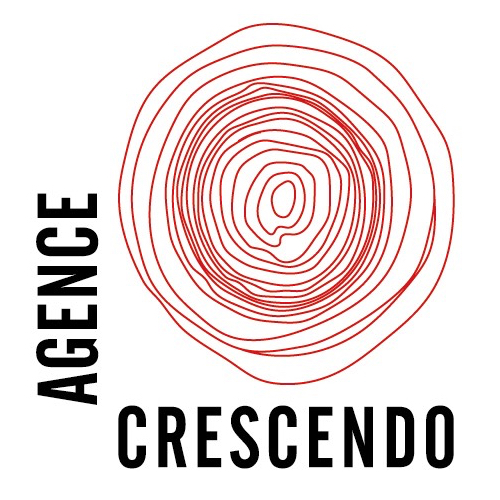
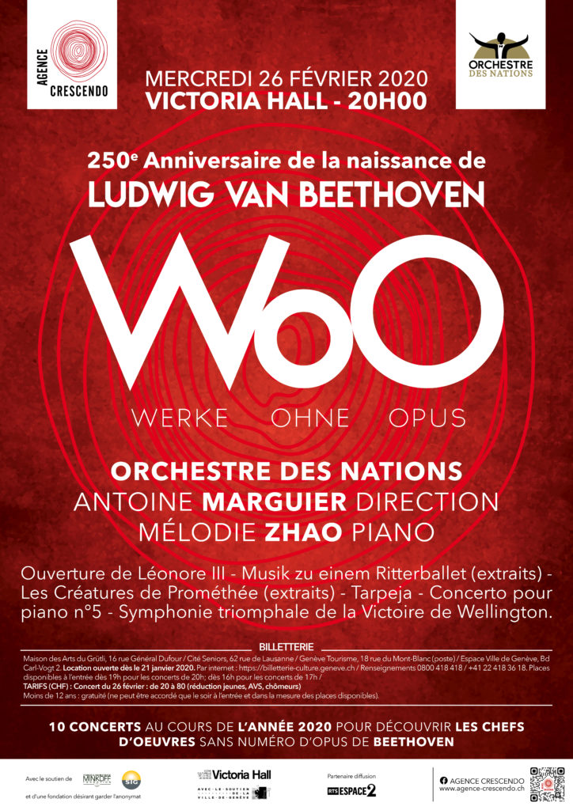
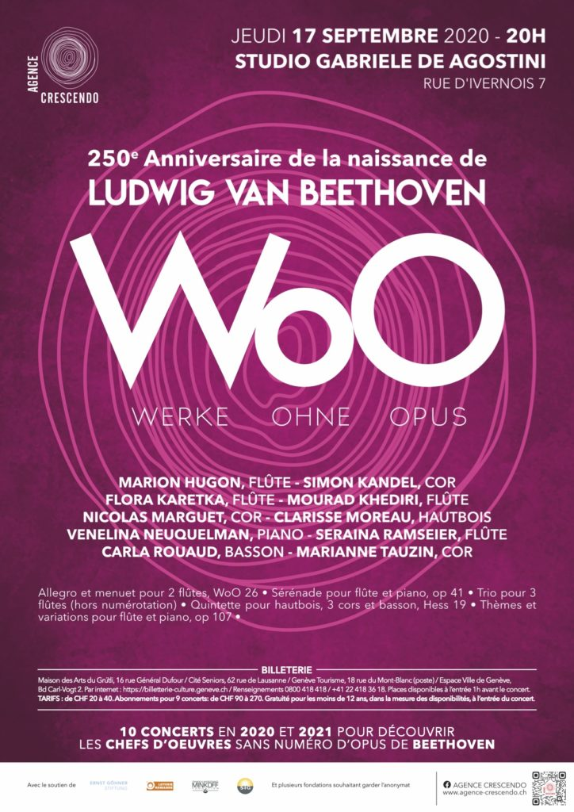
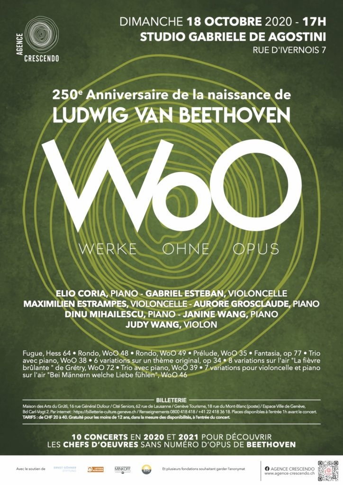
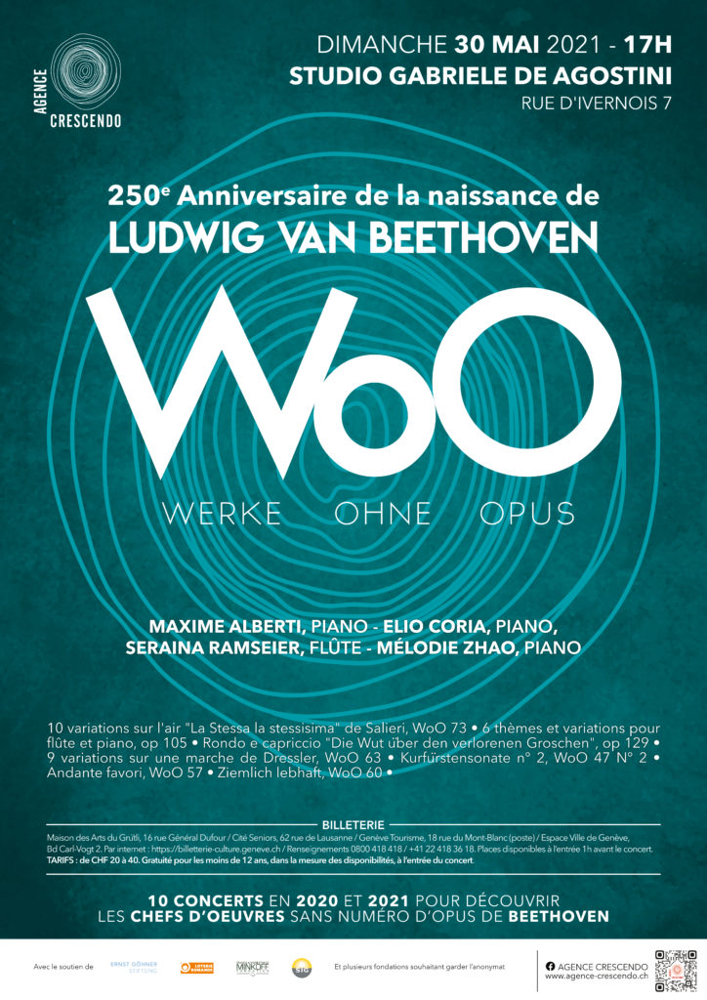
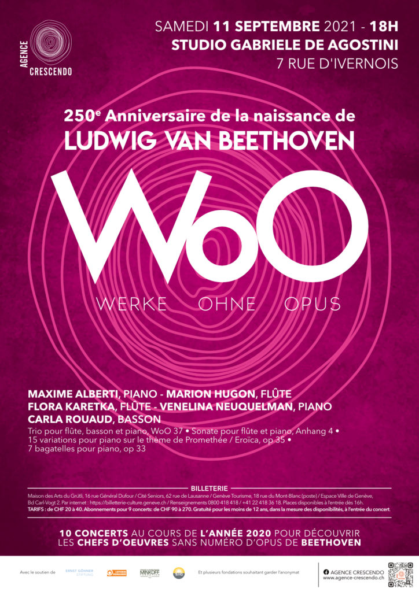
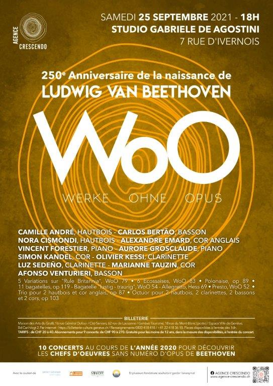
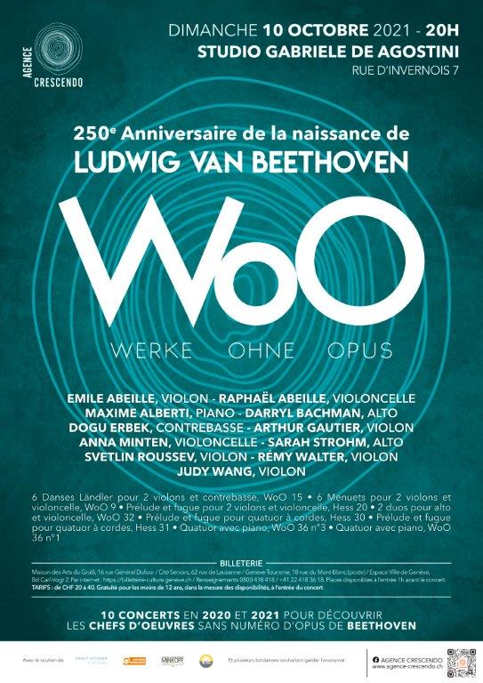
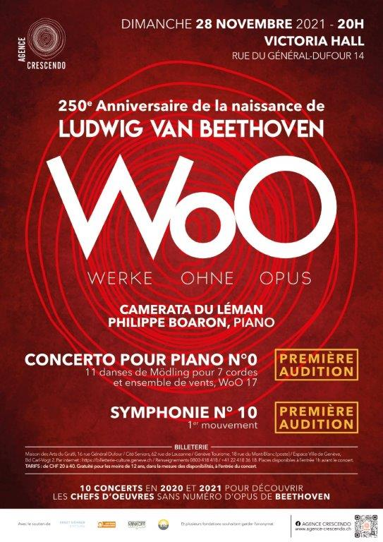

Le comité
- Mme Rodica Boaron, présidente
- Mme Ana Isabel Das Neves Silva, trésorière
- M. Philippe de Choudens

Promotion de jeunes artistes
Association genevoise de mélomanes bénévoles, au service des jeunes musiciens classiques depuis 2013.
Prochains concertsDes bénévoles ; des mélomanes engagés.
Leur but : contribuer à la reconnaissance des jeunes musiciens locaux ; procurer des engagements aux plus brillants d'entre eux.
Fondée en 2013, l'Agence Crescendo a procuré des engagements à plus de 50 jeunes instrumentistes locaux ou ayant un lien particulier avec Genève, au gré de dizaines de concerts. Elle s'est ainsi employée à faire mentir l'adage selon lequel nul n'est prophète en son pays. La qualité étant son premier critère, elle opère ses choix en s'entourant également des recommandations des professeurs des écoles de musique genevoises.
En certains cas, l'Agence agit comme intermédiaire, fournissant à divers organisateurs des artistes qu'elle a retenus, tous concertistes de valeur. Par ailleurs, Crescendo organise aussi ses propres concerts, élaborés selon des considérations musicologiques et pédagogiques.
Dans ces deux cadres, Crescendo est prête à recevoir des CV d'artistes, mais non des projets déjà aboutis, dont elle ne serait que l'exécutante.
Ne poursuivant aucun but lucratif, ne possédant pas de fonds propres, l'Agence ne peut confirmer de projets que si, au préalable, ils sont couverts par des mécènes, sponsors ou subventions. Son statut la différencie radicalement des agences qui, menant une activité commerciale, sont liées par contrat à des musiciens professionnels, leur procurant des engagements, en récital ou avec orchestre, organisant leurs tournées, en somme gérant contre rétribution leur carrière.
Fut le temps, celui des cours royales ou princières, où les musiciens n'étaient en quelque sorte que des domestiques spécialisés. Les temps ont bien changé et maintenant ils jouissent d'un prestige certain. Adulés pour la profondeur de leur inspiration, pour leur virtuosité, ils peuvent désormais apparaître tels des élus, souvent enviés pour avoir accédé à la notoriété.
Or, pour un jeune, le pari de devenir musicien témoigne d'une folle audace, révèle une aptitude peu commune à la persévérance.
C'est dans ces considérations que l'Agence Crescendo trouve sa raison d'être, qui est de contribuer à couronner des années d'efforts, en faisant valoir sur scène de jeunes talents.
Nous leur portons admiration mais tout autant gratitude de défendre et d'illustrer un art qui, à l'opposé de toute futilité, raconte l'homme à lui-même.
Rodica Boaron, présidente
C'est avec une profonde tristesse que nous annonçons le décès d'André Piguet, homme d'exception, érudit, mélomane passionné et esthète éclairé. Aujourd'hui nous perdons un ami, un penseur, un rieur, un amoureux du beau et du vrai. Une voix rare, une âme vive, un être profondément attachant nous quitte.
Fondateur du club Zamis de l'OSR et de l'association Agence Crescendo, André a poursuivi avec conviction pendant des années son objectif de rendre la musique accessible aux jeunes. Remplir le Victoria Hall avec des enfants de tous âges lors des concerts des Zamis et promouvoir les jeunes talents locaux tout en les accompagnant à entrer dans la profession de musicien témoignent d'une belle réussite.
Si sa disparition est un immense chagrin, il nous laisse néanmoins une trace lumineuse, à la mesure de son humanité. Nos pensées les plus sincères accompagnent sa famille !
Le comité Crescendo, les amis et les jeunes musiciens
De cas en cas, l'Agence Crescendo organise ses propres projets, les veut signifiants et d'un intérêt musicologique particulier.
Prochaines dates bientôt annoncées.
Après plusieurs années consacrées aux deux grands projets que furent l'intégrale des quatuors de Beethoven et un riche périple parmi les œuvres sans numéro d'opus du même compositeur, Crescendo privilégie la collaboration avec diverses entités qui, connaissant nos liens avec les talents émergents, recourent à nos services pour la mise sur pied de concerts. L'institution Le Nouveau Prieuré, la Commune de Versoix et dans la foulée plusieurs autres municipalités nous ont ainsi mandatés ; leurs attentes précises agissent comme stimulants.
Il y a lieu de mettre ici en exergue toute une série de concerts qui, à l'initiative du service de la culture de Versoix, permettront de faire revivre, dans toute leur historicité, la présence de grands compositeurs à Genève : Liszt, Ravel, Scriabine, Ginastera, Wagner, Massenet et bien d'autres. C'est la promesse de la révélation d'un passé foisonnant.
Depuis sa fondation, l'Agence Crescendo a organisé toute une variété de concerts : deux récitals au Victoria Hall, un concert avec orchestre à la salle Frank Martin, des concerts dans des communes, pour des entreprises, pour des privés, notamment pour le Domaine viticole de la Clé de Sol, mettant sur pied pendant cinq années consécutives ses concerts classiques d'été.
En 2018-2019, l'Agence a acquis une visibilité nouvelle avec l'intégrale des quatuors de Beethoven donnée en six concerts, au studio Ernest-Ansermet, par le Quatuor Aviv.
Qu'est-ce donc que les WoO ? Nombre de compositeurs laissent des œuvres qu'ils n'ont pas incluses dans leur catalogue officiel. C'est le cas de Brahms, de Schumann par exemple, mais surtout de Beethoven, dont il existe plus de 300 Werke ohne Opuszahl (WoO). Quelques-unes d'entre elles sont célèbres mais, pour la majorité, elles n'appartiennent pas au grand répertoire. Ce ne sont pas forcément des œuvres de jeunesse et, à témoin de leur valeur, quelques interprètes fameux les ont enregistrées.
Un projet mené à bien malgré la pandémie. La mise sur pied du projet WoO, outre les habituelles élaborations de dossiers, de budgets et de supports de communication, fut d'une redoutable complexité, tant par la composition de programmes équilibrés, par l'engagement d'artistes susceptibles d'être en symbiose, par la recherche de partitions que par la mise sur pied de répétitions. Les mesures imposées dans le cadre de la pandémie ont amené le projet à s'étaler non sur une année mais deux. Des concerts ont été reportés, l'un a été annulé, deux autres ont pris place dans le cadre de la Fête de la Musique, deux enfin, par suite de fermeture des salles au public, ont fait l'objet d'enregistrements vidéo.
Une réussite tout de même. Les réactions du public l'attestent : les WoO de Beethoven méritent exhumation, au disque comme au concert. Si ces œuvres ne portent pas de numéro d'opus, c'est essentiellement en raison de leur brièveté ou parce que le compositeur n'a pas souhaité solliciter les éditeurs. Au reste, les œuvres de l'adolescent Beethoven portent déjà la marque de son génie, illustrent une puissance créative que Haydn jugeait stupéfiante. Les jeunes talents locaux ont brillamment affirmé leur potentiel, dans bien des cas encadrés par les musiciens chevronnés de l'OSR.








Se sont déjà produits sous la bannière Crescendo depuis 2013 :
Sauf cas rarissimes relevant du star-system, la musique classique n'est pas une activité bénéficiaire. Les artistes engagés par Crescendo sont toujours rétribués ; les cachets accordés se veulent décents mais ils n'offrent, dans les faits, guère de correspondance avec le temps de travail nécessaire aux musiciens pour l'étude.
Dans ces conditions et au vu des frais organisationnels, Crescendo sollicite, projet par projet, l'appui de diverses fondations et de mécènes privés qui, le cas échéant, souhaitent conserver l'anonymat.
Crescendo entretient par ailleurs des partenariats, notamment avec la Radio Télévision Suisse / Espace 2, qui a capté et diffusé bon nombre de ses concerts, ainsi que des collaborations régulières avec les institutions musicales, les Hautes écoles de musique et les conservatoires.
Pour toute demande, ou pour être tenu·e au courant des activités de l'Agence Crescendo :